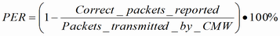

PER Measurements for LE
To measure the packet error rate (PER), you must configure a test connection with direct test mode (see "Direct Test Mode (LE)").
The R&S CMW transmits Bluetooth LE test packets with a specific payload and evaluates the percentage of packets that the EUT receives in error or misses.
A secondary communication channel via USB is used for test commands and reports, radio interface is used for the transmission of test packets. For the test setup, refer to "Tests with USB Interface".
In addition, PER measurements can be performed also with an external upper tester controlling direct test mode at the EUT. In this case set the "HW Interface" to None.
The PER measurement involves several stages:
- The R&S CMW commands the EUT to start the RX measurement at a specific frequency.
- EUT receives and counts the packets. Every packet with passing CRC is counted as a correctly received packet.
- The R&S CMW commands the EUT to end the test.
- EUT reports the correct packets to the R&S CMW.
The results are calculated as follows:
- PER: the ratio of corrupted and missing packets to the total number of transmitted packets in percent:

- Packets transmitted: number of test packets transmitted by the R&S CMW
- Correct CRC rate in transmitted packets: the ratio of packets with the correct CRC to the total number of packets the EUT received from the R&S CMW in percent. If report integrity is enabled, the R&S CMW generates the 50% of test packets with incorrect CRC value.